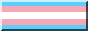
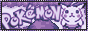
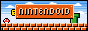

About
" title="Photograph of Héctor" />
Hello! My name is Héctor, and I run the Madison Gamer Club. The MGC started as my passion project and desire to create community with the Madison area. As a hardcore gamer, I found it difficult to find other adult gamers in the area who want to play video games in general. There’s plenty of communities in Madison that focus on a specific genre of video game, but I wanted a community where we focused more on the variety of genres and different types of gamers all around!
Started in March of 2025, the MGC became a massive hit from day one. I started recruiting and advertising on Reddit at first, and within the first week I already had about 60 people interested in showing up to our first meetup! It was very overwhelming, but I’ve been able to weather the tide and maintain this community since then.
After a year of working on the MGC all by myself, I was starting to become more and more overwhelmed with all of the responsibilities surrounding it. During our one year anniversary meetup, I opened the way to recruiting passionate volunteers within the MGC to help divide the workload, and it’s been a massive help! Now we’re able to handle a larger community more effectively, and are looking to recruit more members!
I see the MGC more as a cultural exchange. Gamers all have their preferences. If you’re a cozy-gamer, you likely find yourself playing games like Animal Crossing or Stardew Valley. If you’re an FPS gamer, you’d play games like Fortnite, Call of Duty, Valorant, etc. The MGC strives to bring all gamers of all skill levels to step out of their comfort zone and play something new with each other to facilitate meeting new people. The focus is about socialization, the games just help us get there.
Even if you can’t make it to our “official” meetups, we’ve hosted plenty of smaller events on different times and days to try and bridge the gap between adult schedules. We’re also pretty active in the Discord, and many members find themselves playing games together online!
Variety is the name of the game. We’ve hosted so many different meetups with various themes. If you’re curious to see what exactly we’ve hosted before, check out our history.
I hope reading all of this will encourage you to apply to be a part of our community, we’d love to see you there and participate! We try our best to make sure each new member feels welcomed and facilitate the first steps of socialization, so we hope to see that same effort come from you!


